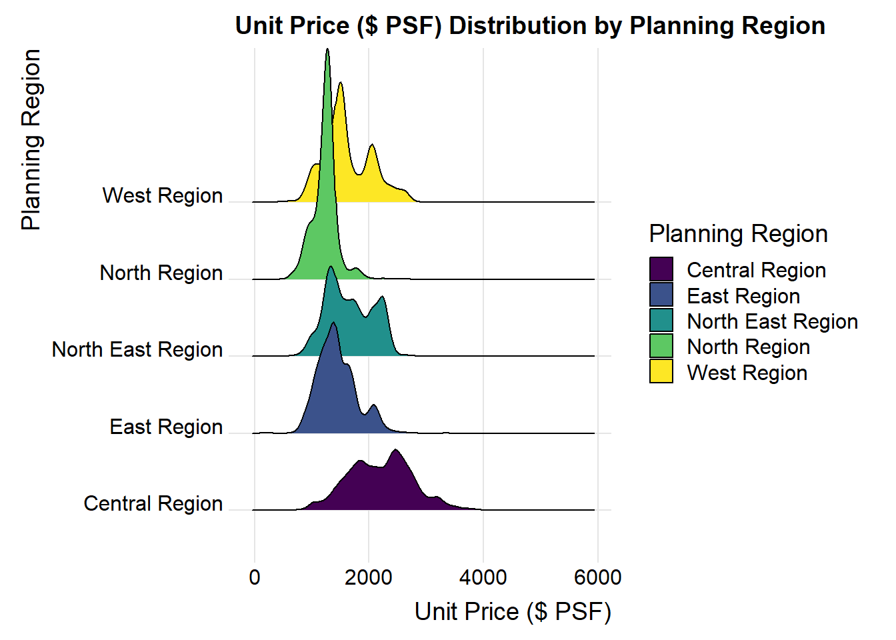
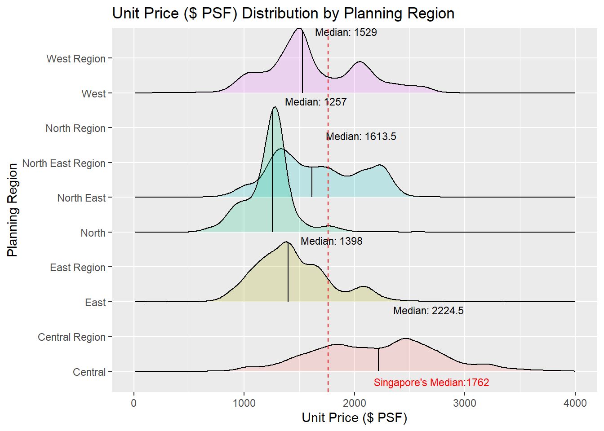
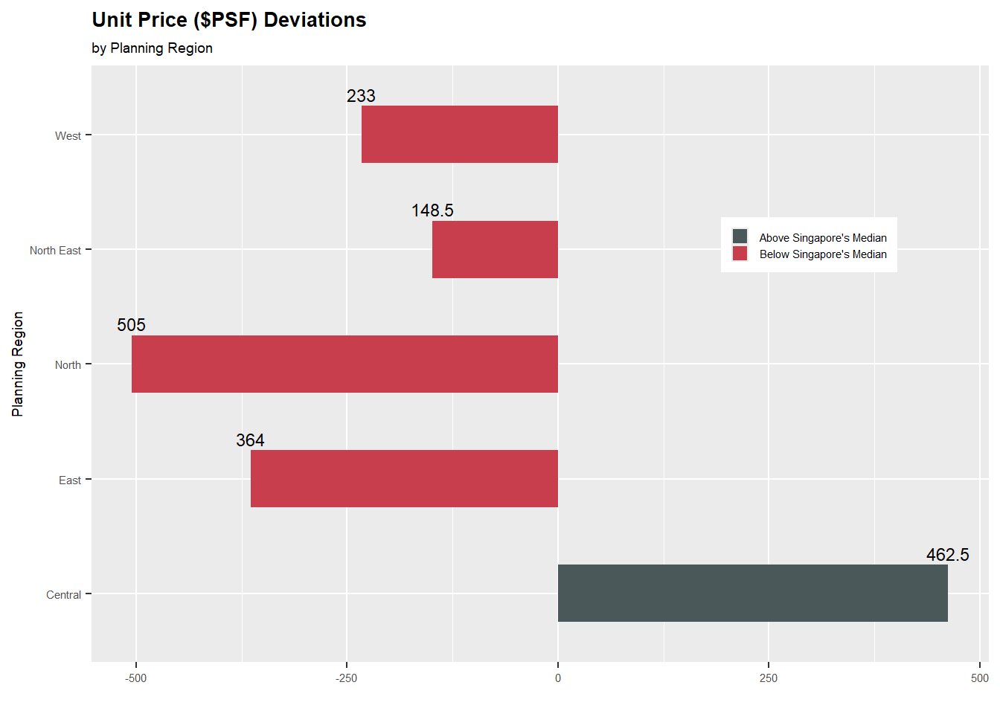
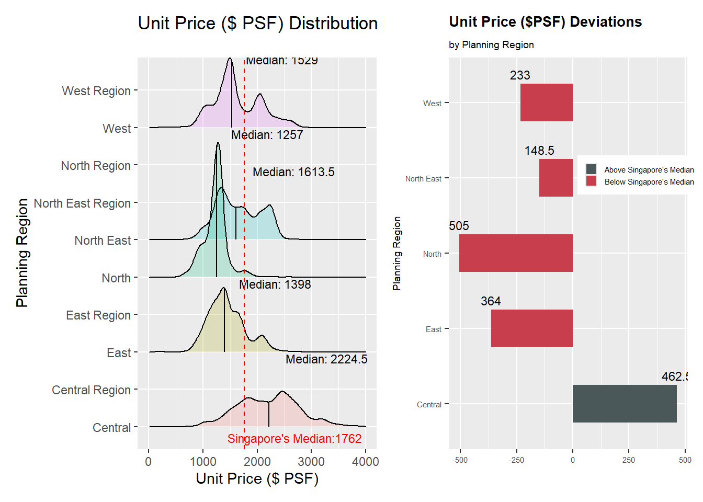

pacman::p_load(tidyverse, haven,
ggrepel, ggthemes,
ggridges, ggdist,
patchwork, scales,
viridis, cowplot,
dplyr, plotly,
tidyr, lubridate,
ggplot2, ggExtra)Take-home Ex 02
Data Visualisation Makeover
1.0 Overview
1.1 Setting the scene
There are two major residential property market in Singapore, namely public and private housing. Public housing aims to meet the basic need of the general public with monthly household income less than or equal to S$14,000. For families with monthly household income more than S$14,000, they need to turn to the private residential market.
1.2 The Task
In this take-home exercise, you are required to:
select one data visualisation from the Take-home Exercise 1 submission prepared by your classmate,
critic the submission in terms of clarity and aesthetics,
prepare a sketch for the alternative design by using the data visualisation design principles and best practices you had learned in Lesson 1 and 2.
remake the original design by using ggplot2, ggplot2 extensions and tidyverse packages.
1.3 The Original Data Visualisation
The original visualisation can be found in this link. I will be using EDA 3 for this take home exercise. Below shows the original plot and the insights by the original creator:

The Insights - The Central Region’s peak is the most pronounced and shifted towards the high, indicating that there is a high concentration of properties with higher unit prices.
- The East Region’s pea is lower and more towards the middle of the x-axis compared to the Central Region. This implies that while the East Region has properties with moderate unit prices, it does not reach as high of a price point as frequently as the Central Region.
- North East and North Regions peaks are less sharp and positioned towards the lower end of the price scale, suggesting a more affordable housing options and a wider distribution of unit prices. North Region appears to have a slightly broader distribution than North East.
- West Region has the lowest peak among all the regions and is positioned towards the far left of the plot. This indicates that the West Region is the most affordable in Singapore.
2.0 Set Up
We will now set up according to the original code provided in the link.
2.1 Loading the packages into R
T he pac::p_load() function to load the required R packages in the working environment. The following packages are used in this set up:
- ggthemes: Extra themes, geoms, and scales for ggplot2.
- tidyverse: A collection of core packages designed for data science, used extensively for data preparation and wrangling.
- ggridges: a ggplot2 extension specially designed for plotting ridgeline plots
- colorspace:
- ggiraph: for making ‘ggplot’ graphics interactive.
- plotly: R library for plotting interactive statistical graphs.
- patchwork: specially designed for combining separate ggplot2 graphs into a single figure.
- lubridate: for easy and fast parsing of Date / Time
- ggrepel: an R package provides geoms for ggplot2 to repel overlapping text labels.
- ggdist: a ggplot2 extension specially design for visualising distribution and uncertainty
2.2 Importing the data sets
Identify the missing values in the data set and removed any missing elements. ‘Type of Sale’ and ‘Property type’ has been converted to factor format. ‘Transacted Price ($)’ and ‘Area (SQFT)’ are converted to numeric data types. ‘Type of Sale’ has been group into three categories. ‘Sale Date’ has been converted to Date format.
The process had been repeated for all five data sets.
ds1 <- read_csv("data/ResidentialTransaction20240308160536.csv")
ds2 <- read_csv("data/ResidentialTransaction20240308160736.csv")
ds3 <- read_csv("data/ResidentialTransaction20240308161009.csv")
ds4 <- read_csv("data/ResidentialTransaction20240308161109.csv")
ds5 <- read_csv("data/ResidentialTransaction20240414220633.csv")prepare_dataset <- function(ds) {
colSums(is.na(ds))
ds <- na.omit(ds)
ds$`Type of Sale` <- tolower(as.character(ds$`Type of Sale`))
ds$`Type of Sale` <- ifelse(ds$`Type of Sale` %in% c("new sale", "resale"), ds$`Type of Sale`, "other")
ds$`Type of Sale` <- as.factor(ds$`Type of Sale`)
ds$`Property Type` <- as.factor(ds$`Property Type`)
ds$`Transacted Price ($)` <- as.numeric(gsub("[^0-9.]", "", ds$`Transacted Price ($)`, perl = TRUE))
ds$`Area (SQFT)` <- as.numeric(gsub("[^0-9.]", "", ds$`Area (SQFT)`, perl = TRUE))
ds$`Unit Price ($ PSF)` <- as.numeric(gsub("[^0-9.]", "", ds$`Unit Price ($ PSF)`, perl = TRUE))
return(ds)
}
# Apply the function to each dataset
ds1 <- prepare_dataset(ds1)
ds2 <- prepare_dataset(ds2)
ds3 <- prepare_dataset(ds3)
ds4 <- prepare_dataset(ds4)
ds5 <- prepare_dataset(ds5)
# Combine the datasets
combined_ds <- rbind(ds1, ds2, ds3, ds4, ds5)# Convert Sale Date to Date format
ds1$`Sale Date` <- dmy(ds1$`Sale Date`)
ds2$`Sale Date` <- dmy(ds2$`Sale Date`)
ds3$`Sale Date` <- dmy(ds3$`Sale Date`)
ds4$`Sale Date` <- dmy(ds4$`Sale Date`)
ds5$`Sale Date` <- dmy(ds5$`Sale Date`)3.0 Critic on the EDA 3
The original plot and code is as below:

library(viridis)
ggplot(combined_ds, aes(x = `Unit Price ($ PSF)`, y = `Planning Region`, fill = `Planning Region`)) +
geom_density_ridges(scale = 3) +
scale_fill_viridis(discrete = TRUE) +
labs(title = "Unit Price ($ PSF) Distribution by Planning Region",
x = "Unit Price ($ PSF)",
y = "Planning Region") +
theme_ridges()The Insights
- The Central Region’s peak is the most pronounced and shifted towards the high, indicating that there is a high concentration of properties with higher unit prices.
- The East Region’s pea is lower and more towards the middle of the x-axis compared to the Central Region. This implies that while the East Region has properties with moderate unit prices, it does not reach as high of a price point as frequently as the Central Region.
- North East and North Regions peaks are less sharp and positioned towards the lower end of the price scale, suggesting a more affordable housing options and a wider distribution of unit prices. North Region appears to have a slightly broader distribution than North East.
- West Region has the lowest peak among all the regions and is positioned towards the far left of the plot. This indicates that the West Region is the most affordable in Singapore.
3.1 Critics on Aesthetics
The distribution without the quantile lines is unable to let audience know where is the median and make it hard to conclude just using peak: “West Region has the lowest peak among all the regions and is positioned towards the far left of the plot. This indicates that the West Region is the most affordable in Singapore.” While the peak of the respective region does indicate the highest frequency of data points, it does not reveal the overall median price and other aspect such as the the 4 quantiles. Hence, it might be easier for the audience if quantiles were included in the aesthetics of the plot. With this enhancement, it might be easier to define which Region is more affordable, rather than just saying that West is most affordable as it is “most far left”.
The legend for the Planning Region to the right of the plot is redundant, as it is very clear from the y-axis which plot belongs to which region. If we choose to retain the legend, perhaps it could be compressed slightly smaller to the top right corner of the plot (as there are ample empty space between the 4000-6000 mark along x-axis), and the free up spaces could be used to insert another plot that enhance the story-telling for this plot.
The current distribution is 100% opaque and parts of the North Region graph is overlapping the West Region. While the peak of the West Region is still visible, it could be better for audience if the distribution is slightly transparent to allow the audience to see the full distribution of the West Region. It will be complementing the enhancement with quantiles added, as by adjusting the transparency, we will be able to see all the quantiles without guessing through the overlapped areas.
3.2 Critics on Clarity
As most of the distribution in this plot falls between the $1,000-$3,000 mark along the x-axis, the current axis ticks did not allow the audience to have a clear sense of where the peaks are, except for a rough sense of gauging the peak from the neares two x-axis ticks, which is 0 or 2000. To alleviate this issue, the frequency of the x-axis ticks could be increased. Also, visually the plot for the Central Region at the most right, seems to end at just below the 5,000 mark. Space could be saved by ending the x-axis ticks at 5,000 instead, without affecting the clarity and truthfulness of the plot.
Instead of guessing from the distribution which Region is the most affordable and which is the highest priced, it would be clearer if we add in another plot with comparison of the exact mean and median price across the 5 regions using a horizontal bar chart to complement the existing plot.
The plot is able to let audience understand the overall comparison of distribution against the other 4 regions, but did not provide any comparison of each region against the overall median Unit Price in Singapore. To help audience understand the distribution with respect to the overall median, an overall median line for the Unit Price could be added. In this way, not only we put perspective of region against region, we also include the perspective of each region against the overall market in Singapore.
4.0 The Data Visualisation Makeover
4.1 Envisioned Enhancements
Task: Prepare a sketch for the alternative design by using the data visualisation design principles and best practices you had learned in Lesson 1 and 2.
Using the 6 critics mentioned in section 3, I will attempt to enhance the plot by including/removing the following features:
Include quantile lines for each Region.
Remove the legend.
Increase the transparency of the distribution to ensure all parts of the distribution is not hidden behind other distribution. Alternatively, we can adjust the scale of the
geom_density_ridges()to prevent overlaps. Decision can be made after generating both types for consideration.Increase the frequency of the x-axis ticks with soft grid lines to improve readability of distribution.
Remove the excess space at the right of the plot after 5,000 mark of x-axis.
Add in a horizontal bar chart to the right of the existing plot to include the comparison with overall median Unit Price ($ PSF) in Singapore with each of the region.
Add in a overall Median Unit Price ($ PSF) for the existing ridgeline plot.
Include median value annotations for each region in the existing ridgeline plot.
Rename the y-axis to just the region name, i.e. “West” instead of “West Region”.
Using
patchworkto patch both plots side by side. The left and right plot should have the same region in the same line for consistency.
4.2 Preparatory Sketch
The first sketch below shows the intended implementation of the enhancement as mentioned in section 4.1. After this quick sketch with the median values, I realise that there are some further steps to take for a more coherent picture. (caveat: the median value is a rough calculation to facilitate the sketch, it may not be the same value as the final plot reproduced)
The horizontal bar plot should be sorted according from largest negative value to the highest positive value (red at the top to blue at the bottom). This allows the audience to know the most affordable region to the most expensive region from top down.
The distribution plot to the left must synchronised in the same sequence based on the Region, so that the price deviation on the right plot is correctly reflected as the same Region.

4.3 The Makeover Result

# Calculate median values
median_values <- combined_ds %>%
group_by(`Planning Region`) %>%
summarise(median_value = median(`Unit Price ($ PSF)`))
# Recode `Planning Region`
combined_ds <- combined_ds %>%
mutate(`Planning Region` = recode(`Planning Region`,
"Central Region" = "Central",
"East Region" = "East",
"North Region" = "North",
"North East Region" = "North East",
"West Region" = "West"
))combined_ds1 <- combined_ds %>%
mutate(`Planning Region` = factor(`Planning Region`, levels = median_values$`Planning Region`[order(median_values$median_value)]))p1 <- ggplot(combined_ds,
aes(x = `Unit Price ($ PSF)`,
y = `Planning Region`,
fill = `Planning Region`)) +
geom_density_ridges(alpha = 0.2, quantile_lines = TRUE, quantile_fun = function(x, ...) median(x)) +
geom_text(data = median_values,
aes(x = median_value,
y = `Planning Region`,
label = paste("Median:", round(median_value, 2))),
hjust = -0.2,
vjust = -2.8,
color = "black",
size = 3) +
labs(title = "Unit Price ($ PSF) Distribution by Planning Region",
x = "Unit Price ($ PSF)",
y = "Planning Region") +
geom_vline(aes(xintercept = median(`Unit Price ($ PSF)`)), col="red", linewidth=0.5, linetype = "dashed") +
annotate("text", x=2700, y=0.7, label=paste0("Singapore's Median:",median(combined_ds$`Unit Price ($ PSF)`)),
size=3, color="red") +
guides(fill = FALSE) + # Remove legend for Planning Region
xlim(0, 4000)
p1
# Classifying the Median into Above and Below Singapore's Median
df_Aavg <- combined_ds %>%
group_by(`Planning Region`) %>%
summarise(avg_Aprice = median(`Unit Price ($ PSF)`))
df_Aavg$p_z <- round((df_Aavg$avg_Aprice - median(combined_ds$`Unit Price ($ PSF)`)), 2)
df_Aavg$p_ztype <- ifelse(df_Aavg$p_z < 0, "below", "above")
p2 <- ggplot(df_Aavg, aes(x = `Planning Region`, y = p_z, label = p_z)) +
geom_bar(stat = "identity", aes(fill = p_ztype), position = position_dodge2(width = 2), width = 0.5) +
scale_fill_manual(name = "Average Price", labels = c("Above Singapore's Median", "Below Singapore's Median"), values = c("below" = "#C83E4D", "above" = "#4A5859")) +
labs(title = "Unit Price ($PSF) Deviations", y = "", subtitle = "by Planning Region") +
coord_flip() +
theme(legend.position = "None", text = element_text(size = 8), plot.title = element_text(size = 10, face = "bold")) +
theme(text = element_text(size = 7),
legend.title = element_blank(),
legend.position = c(0.8, 0.7),
legend.key.size = unit(0.3, 'cm'),
legend.key.height = unit(0.3, 'cm'),
legend.key.width = unit(0.3, 'cm')) +
geom_text(aes(x = `Planning Region`,
y = df_Aavg$p_z,
label = abs(df_Aavg$p_z)),
hjust = 0.5,
vjust = -2.5,
size = 3)
p2
p1+p2
4.4 Conclusion
Alignment of Planning Region for the left and right plot is important for visual perception of audience, as the alignment allows them to have a direct translation of the differences (the right side plot) without doing mental calculation.
The two colors of the horizontal bar chart gives an immediate answer to which region is above and below the Singapore’s average.
5.0 References
1. T.S. Kam, R for Visual Analytics Chapter 9 for visualisation of Ridgeline plots with quantile lines.
2. Claus O. Wilke, Fundamentals of Data Visualization Chapter 2 for understanding and classification of variables.
3. Stack Overflow, “Filter rows which contain a certain string” for removing en bloc sales from the data frame.